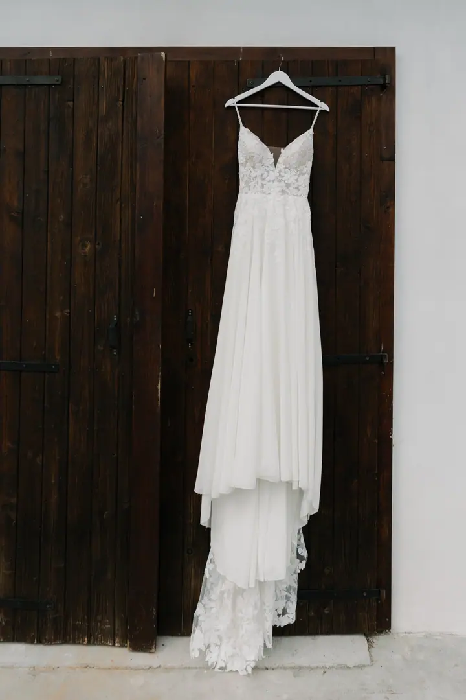

Svatby
Bez póz a bez stresu, jen vy dva a vaši nejbližší. Ráda s vámi strávím celý den a zachytím ho takový, jaký skutečně je, plný smíchu, slz a malých detailů.





Jmenuji se Bára Vránová, ale klidně mi říkejte Baru. Fotím svatby a rodiny mezi Prahou a Strakonicemi a nejradši při tom splynu s davem. Ve vaší galerii nebude chybět spousta emocí, detailů a černobílých momentek.
Více o mně
„Věřím, že nejhezčí okamžiky jsou právě ty, které přijdou samy od sebe.“
— Bára Vránová
Bez póz a bez stresu, jen vy dva a vaši nejbližší. Ráda s vámi strávím celý den a zachytím ho takový, jaký skutečně je, plný smíchu, slz a malých detailů.
Párové, rodinné, těhotenské i newborn focení venku na louce nebo u vás v obýváku. Vyfotím vás takové, jací jste, bez strojených póz.
Reportáže z firemních akcí, festivalů a maturitních plesů a také firemní portréty. Pracuji nenápadně, ale efektivně, aby fotky odrážely atmosféru vaší akce.
Fotografie jsou ilustrační
Fotografie mě provází už od dětství, kdy jsem poprvé vzala do ruky foťák. Dnes se pohybuji mezi Strakonicemi a Prahou, kde balancuji studentský život s vášní pro focení svateb a rodin.
Můj přístup je přirozený, nenucený a plný respektu k vašim přáním. Nebudu vás nutit do nepřirozených póz ani narušovat plynulost vašeho dne. Hosté o mně často říkají, že tak přirozeně splynu s davem, že jim objektiv přestane vadit. A nejvíc mě těší, když si sedneme nejen profesně, ale i lidsky.
Když zrovna nefotím, najdete mě s batohem na zádech v horách nebo na tanečním sále. Tancovat učím děti různého věku, a možná proto mě práce s dětmi při focení tolik baví.
Napište mi přes formulář, o jaké focení máte zájem, a klidně i něco o sobě. Moc ráda si o vás poslechnu cokoliv.
Společně probereme vaše představy, místo a průběh. U svatby vám pošlu kompletní ceník na míru.
Fotím nenápadně a bez strojených póz. Vy si užíváte den a já zachycuji smích, slzy, objetí i drobné detaily.
Upravené fotografie dostanete ve vlastní online galerii, která je platná po dobu jednoho roku.
Balíček Základní stojí 3 500 Kč (zhruba hodina focení a 20 upravených fotek, které si vyberete sami, každá další za 150 Kč). Balíček Příběh stojí 5 500 Kč a obsahuje 50+ fotek, které vybírám já.
Svatby jsou pokaždé jiné, proto mě prosím kontaktujte a pošlu vám kompletní svatební ceník.
Ne. Chci, abyste byli sami sebou a užívali si společný čas. Nejhezčí fotky vznikají samy od sebe.
Nejčastěji v Praze a na Strakonicku, ale ráda za vámi přijedu i jinam. Rodinné focení může klidně probíhat na louce nebo u vás doma.